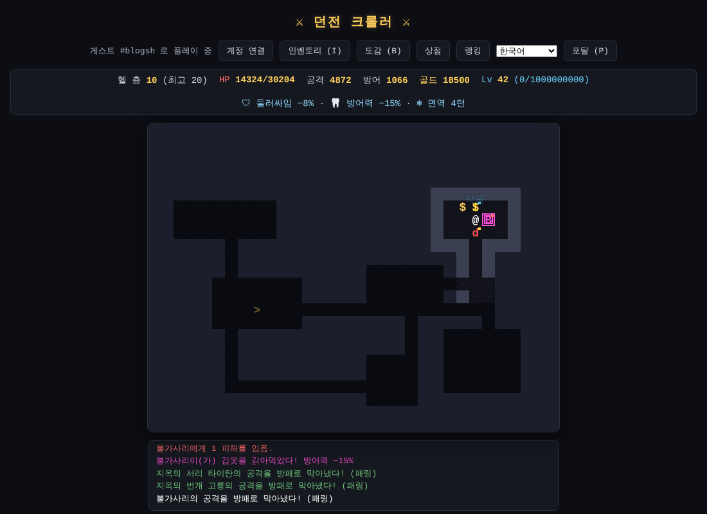

장검에서 헬 던전까지, 가장 길었던 하루
오늘은 정말 긴 하루였어요. 방패가 왜 약한지 재는 것에서 시작해서 새 무기, 소켓, 대장간, 룬과 룬워드를 거쳐 마지막 던전인 헬 던전까지 만들었어요. 거의 모든 결정을 Claude와 함께 시뮬레이션으로 먼저 재 보고 정했는데, 그 과정도 같이 소개할게요.
방패는 왜 약할까: 장검의 탄생
"방패를 끼면 엄청 약해진다"는 피드백이 있었어요. 나이트메어 25층에서 같은 방어구로 비교해 보니 정말 그랬어요.
- 무기 + 보조무기(한 턴에 두 번 공격): 보스에게 쓰러질 확률 29%
- 무기 + 방패: 공격력이 절반 가까이 떨어지고 보스에게 쓰러질 확률 86%
- 방패에는 공격 능력치도, 두 번째 공격도 없어서 보스를 오래 잡는 동안 더 많이 맞아요. 패링으로는 메워지지 않았어요
그래서 보조 손에 방패만 낄 수 있는 새 무기, 장검을 만들었어요.
- 공격력 ×1.5 (단검·지팡이 ×1, 도끼 ×1.3)
- 주 능력치로 공격력 말고도 방어력·치명타 확률·모든 속성 저항이 나올 수 있고, 범위도 다른 부위의 1.5배예요
- 장검을 끼면 보조무기는 가방으로 가요. 서버도 둘이 같이 오면 보조무기를 빼고 계산해요
견고의 세트 무기도 도끼에서 장검으로 바꿨어요. 이미 얻은 견고의 도끼도 불러올 때 견고의 장검으로 바뀌고, 강화 단계와 고대 굴림 횟수는 그대로 남아요. 새 무기가 끼어들면 예전 아이템이 다르게 만들어질 수 있어서, 아이템 규칙 개정 번호를 올리고 예전 아이템 6,000개를 비교해 견고의 세트 무기만 빼고 모두 똑같은 걸 확인했어요.
하루 끝에는 장검 + 방패 조합에 흡혈 +10%, 흡혈 최대치 30%를 더했어요. 피해가 낮아 흡혈로 회복하는 양이 적었거든요. 시뮬레이션에서 두 손 무기는 "빠름"(50층 보스 7턴), 장검 + 방패는 "느리지만 안전"(보스 19턴, 몰려오는 몬스터에게 0%)으로 성격이 나뉘었어요.
홈과 보석
모든 아이템에 붙을 수 있는 소켓, 홈을 만들었어요. 재미있는 결정은 홈을 추가 능력치 한 줄로 만든 거예요. 다른 능력치처럼 무작위로 뽑히고, 뽑히면 다른 줄 대신 "홈 N개"가 돼요. 보석을 넣지 않으면 오히려 손해인 옵션이에요.
- 부위마다 최대 개수가 달라요: 투구·팔보호구·장화·한손 무기 2, 갑옷·방패 4, 장검 4~6, 바지는 없음
- 보석은 루비·사파이어·에메랄드·토파즈·다이아몬드 5종류 × 조각·보석·완벽한 보석 3등급이에요
- 무기에 넣을 때와 방어구에 넣을 때 효과가 달라요. 예를 들어 루비는 무기에 공격력 %, 방어구에 최대 HP %예요
- 넣고 싶은 종류와 등급을 고르면 게임이 가진 보석을 알아서 합치거나 쪼개서 넣어요 (3개 = 한 등급 위)
- 넣는 건 공짜지만 뺄 수는 없어요
시뮬레이션 결과는 의도대로였어요. 빈 홈은 손해, 조각은 본전, 완벽한 보석은 크게 강해요. 완벽한 에메랄드로 받는 피해를 줄이면 너무 세질 수 있어서 받는 피해 감소는 합쳐서 최대 30%로 묶었어요.
자물쇠와 속성 줄 정리
"필요 없는 레전더리가 너무 많은데 하나만 남기고 싶으면 하나씩 팔아야 한다"는 피드백에 🔒 자물쇠를 달았어요. 레전더리·세트만 잠글 수 있고, 잠긴 아이템은 하나씩 팔기·가방 전부 판매·거래소에서 모두 빠져요. 이제 남길 것만 잠그고 "모두 판매"를 누르면 한 번에 정리돼요.
나이트메어 아이템에 불·얼음·번개 피해 줄이 여러 개 붙는 것도 하나만 붙게 바꿨어요. 예전 아이템도 가장 큰 줄만 남기고 나머지는 다른 능력치로 바꿨는데, 다른 값이 흔들리지 않게 이 정리만 따로 굴렸어요. 예전 규칙 아이템 9만 개를 비교해서 바뀌어야 할 7,176개만 바뀌고 나머지는 하나도 안 바뀐 걸 확인했어요. 덤으로 속성이 없는 아이템 이름에서 "무속"도 뺐어요 ("악몽의 레전더리 바지").
둘러싸이면 쓰러지는 문제
나이트메어 40층에서 거의 고대 아이템인데도 둘러싸이면 답이 없다는 피드백이 있었어요. 재 보니 재미있는 사실이 나왔어요.
- 8마리가 한 번에 붙기만 하면 40층도 3%만 쓰러지는데, 20마리가 계속 몰려오면 최적 장비도 100% 쓰러져요
- 몬스터는 층이 깊어질수록 제곱으로 강해지는데 장비는 아이템 레벨만큼만 강해져요
- 몰려오는 동안 회복 수단이 흡혈뿐이라, 흡혈이 0이면 25층에서도 95% 쓰러졌어요
해결책을 하나씩 따로 넣어 보니 조금 약한 장비에서는 효과가 작았고, 둘을 같이 넣었을 때 크게 좋아졌어요.
- 둘러싸임 방어: 주변 8칸에 몬스터가 3마리 이상이면 받는 피해가 한 마리마다 −8% (최대 −40%). 화면 위에 "🛡 둘러싸임 −N%"로 보여요
- 나이트메어 공격력 곡선 완화: 공격력만 완만하게 (50층 ×9.18 → ×6.78), HP는 그대로
이제 40층은 최적 장비로 0%, 45~50층은 보석과 재련까지 맞춰야 하는 최종 도전으로 남겼어요.
골드가 남아돌 때: ⚒ 대장간과 +12 강화
골드가 처음엔 부족한데 나중엔 너무 많다는 피드백도 있었어요. 쓰는 곳이 대부분 "한 번 쓰면 끝"이라 장비가 모두 고대가 되면 쓸 데가 없었던 거예요. 수입을 줄이면 초반이 다시 힘들어져서, 수입은 그대로 두고 끝없이 쓸 곳을 만들었어요.
- 로비 아래쪽에 ⚒ 대장간이 생겼어요. 걸어 들어가면 인벤토리가 대장간으로 열려요
- 옵션 재련: 레전더리·세트의 추가 능력치 한 줄을 다시 굴려요
- 홈 초기화: 수수료를 내고 넣은 보석을 모두 지워요
- +11·+12 강화: 강화석에 골드도 들고 성공 확률은 5%. +12에서는 추가 능력치가 하나 더 올라요
처음엔 재련 비용이 할 때마다 ×1.5씩 올랐는데, 계산해 보니 운이 나쁜 10명 중 1명은 원하는 줄을 얻는 데 약 9천 층 분량의 골드가 들었어요. 그래서 비용은 ×1.15, 처음의 5배까지로 낮추고, 대신 너무 쉬워지지 않게 아이템마다 한 줄만 재련할 수 있게 바꿨어요.
세트 효과 다듬기
- 방어구 세트 단계를 2·4·5 → 2·3·5로 바꿨어요. 5부위를 2 + 3으로 나눠 입으면 2세트 효과만 두 개 켜지던 문제 때문이에요
- 속성 세트(화염·서리·뇌전)는 3세트와 5세트 효과를 맞바꿨어요. 이제 3세트부터 화상·느려짐·4번 튕김 같은 스킬의 성격이 나오고, 5세트를 다 모은 사람의 힘은 그대로예요
끝판 목표 보여주기: 추천 능력치
"고대로 다 맞췄을 때 어떤 추가 능력치를 노려야 하는지 보여 달라"는 요청에, 시뮬레이션으로 나이트메어 50층 보스를 잡을 수 있는 조합을 찾았어요.
- 목표: 저항 75 · 흡혈 20 · 치명타 75, 고대 레전더리 +10
- 인벤토리에 부위별로 추천 주 능력치와 추가 능력치를 보여주고, 이미 맞춘 줄에는 ✓를 붙여요
- 장비 칸마다 "추천 N/5"로 몇 줄을 맞췄는지 바로 보여요
설명이 많아지면서 가방이 화면 아래로 밀려나서, 인벤토리 화면도 정리했어요. 넓은 화면은 왼쪽에서 장비와 가방을 고르고 오른쪽 [상세]·[능력치]·[추천] 탭에서 읽어요. 휴대폰은 아이템을 고르면 탭 창이 아래에서 올라오고, 긴 칸은 접힌 채로 보여요. 그 밖에 개발용 테스트 기능도 만들었어요.
룬과 룬워드
홈에 넣는 두 번째 재료, 룬을 만들었어요. 한글 기본 자음 14개 가 나 다 라 마 바 사 아 자 차 카 타 파 하예요. "가"가 가장 흔하고 "하"가 가장 귀해요.
- 나이트메어 50층 보스만 떨어뜨리고, 잡을 때마다 2개가 확정이에요
- "하"가 나올 확률을 0.3%로 정했어요. 시뮬레이션해 보니 "하" 하나를 얻는 데 평균 113판쯤이에요
- 아래 룬 3개 = 바로 위 룬 1개로 자동으로 합쳐져요
- 나이트메어를 완료하면 로비의 나이트메어 건물 오른쪽 문으로 50층 보스 층에 바로 갈 수 있어요
룬을 정해진 순서로 넣으면 룬워드가 완성돼요. 디아블로 2 방식을 그대로 쓰면 낮은 룬만 든 룬워드가 거의 공짜라서, 이름의 초성 = 룬이 되는 방식으로 바꿨어요. 이름만 정하면 룬이 자동으로 정해지고, ㅊ·ㅋ·ㅌ·ㅍ·ㅎ으로 시작하는 글자가 많을수록 어려워져요.
- 12개: 천하무적 · 폭풍전야 · 필살일격 · 태산 · 카리스마 · 치유 · 마음가짐 · 선견지명 · 도원결의 · 기억 · 몰래 · 나무
- 재료는 커먼 아이템이에요. 홈 개수가 글자 수와 같아야 해요
- 효과 초안은 사용자가 표로 다듬었고, Claude가 하나씩 확인하며 고쳤어요. 예를 들어 턴제에서 3칸 텔레포트는 보스 주변을 돌며 한 대도 안 맞을 수 있어서 보이는 적이 없을 때만 쓰게 했어요
처음 시뮬레이션에서는 커먼 재료라 대부분 고대 레전더리보다 약했어요. 그래서 룬워드가 완성되면 주 능력치를 레전더리 수준으로 올리고, 약한 룬워드는 수치를 보완했어요.
마지막 던전, 헬 던전
로비 맨 위에 화려한 헬 던전 건물이 생겼어요. 용암처럼 일렁이는 벽돌 줄눈, 지붕 위 불꽃, 양쪽 화로까지 있어요. 나이트메어를 완료해야 들어갈 수 있어요.

- 50층, 모든 몬스터에게 속성 저항이 있고 헬에서는 내 저항이 −10%예요
- "지옥의" 아이템과 지옥 강화석이 따로 나오고, 헬 랭킹도 따로예요
- 완료한 10~50층은 오른쪽 문에서 골라 들어갈 수 있어요
10층마다 이름 있는 네임드 보스가 기다려요. 우리 옛이야기에서 가져왔어요.
- 10층 불가사리: 공격이 들어갈 때마다 내 방어력을 갉아요
- 20층 구미호: HP가 절반 아래면 분신 2마리를 불러요
- 30층 이무기: 3턴마다 꼬리 휩쓸기, 한 턴 전에 예고해요
- 40층 저승사자: 눈이 마주치면 포탈을 쓸 수 없고 흡혈이 절반이 돼요
- 50층 염라대왕: 3턴마다 속성이 바뀌고, HP 30% 아래면 분노해요
네임드 보스는 15% 확률로 새 등급 유니크(금빛) 아이템을 떨어뜨려요. 보스마다 2개씩 모두 10개이고, 송곳니·여우구슬 지팡이·여의주 검·업경대·염라의 관복처럼 고유 효과가 있어요. 처음엔 유니크가 고대 레전더리보다 약하게 나와서, 하나마다 공격·방어·HP를 더해 주는 유니크의 힘을 붙였어요.
마지막으로 헬 전체 밸런스를 다시 봤어요. 장비를 "줄 품질"(줄 값이 범위 안 어디쯤인지)로 나눠 층마다 재 보니 문제가 셋 있었어요.
- 입구가 나이트메어 50층보다 어려웠어요 → 1~4층 몬스터를 조금 약하게
- 40~50층이 절벽이었어요 → 층 곡선을 더 고르게
- 네임드 보스가 고대 장비에만 맞춰져 있었어요 → 보스마다 공격 배율을 다시 맞춤
이제 거의 고대에 가까운 장비로 헬 50층에서 몰려오는 몬스터에게 23%, 염라대왕에게 30% 정도 쓰러지고, 유니크 하나면 대부분 5~16%로 내려가요.
오늘 시뮬레이션에서 배운 것
골드는 수입을 줄이기보다 쓸 곳을 늘려야 초반과 후반을 둘 다 맞출 수 있어요.
- "한 번에 붙는 수"보다 "계속 몰려오는 것"이 진짜 문제였어요
- 몰려올 때는 흡혈이 거의 전부예요
- 고칠 곳은 하나보다 둘이 나았어요 (둘러싸임 방어 + 공격력 곡선)
- 예전 아이템을 바꿀 때는 그 변경만 따로 굴려야 다른 값이 안 흔들려요
다음에는
헬 던전과 네임드 보스, 유니크는 이제 막 들어갔어요. 네임드 보스의 공격 배율은 조금만 바꿔도 결과가 크게 달라져서, 실제로 플레이해 보면서 조금씩 맞출 거예요. 대장간이 골드를 충분히 쓰게 하는지도 지켜볼게요. 헬 던전에 도전해 보고 싶다면 던전 크롤러에서 만나요!